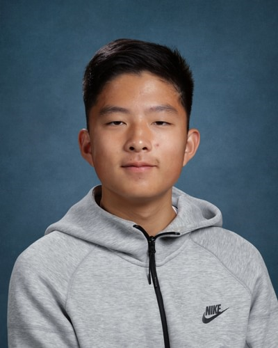

Eastside Philosophy is a student-led organization built on the belief that philosophy belongs in every classroom. We are a group of high school students from across the Eastside who are committed to making philosophy accessible, rigorous, and relevant. Through lectures, interviews with leading academics, and a growing resource library, we work to bring the foundational questions of human life into spaces where students can engage with them seriously. Our chapters span multiple schools, and our mission is simple: to help students think clearly, argue well, and engage with the ideas that have shaped the world.
Executive Team

Aren Loving
President

Jeffery Lou
Vice President

Hennry Lou
Secretary

Lucas Ma
Representative

Gregoire Keene
Representative
The Bush School Team

Jason Cheng
President
Vivian Cayetano
Member
Max Nichols
Member
Sophia Elkhamri
Member